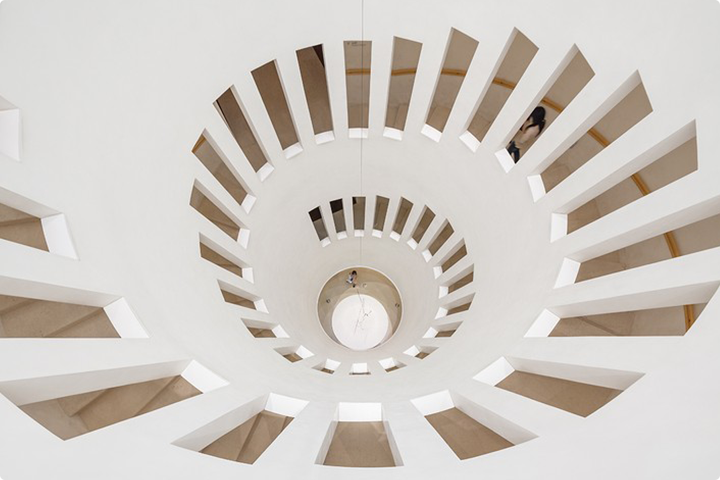
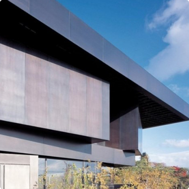

intro-mission
리움은 문화창조에 기여하고, 소통하는 21세기 융합미술관을 지향합니다.


1965년 삼성문화재단 설립 이후 소중한 문화 유산을 보전하고 대중에게 알리고자 노력해온 삼성미술관은 2004년 서울 한남동에 미술관 건물을 신축하면서 리움미술관을 개관했습니다.
수준 높은 소장품 전시 및 기획전시 개최 등 그간의 괄목할만한 활동과 성과로 지금 리움은 명실공히 한국을 대표하는 미술관으로 성장하였습니다.
리움의 목표
리움미술관은 한국 고유의 미를 담고 있는 전통미술과 생동하는 현대미술, 시대적 가치를 반영한 국 제미술이 함께 공존하는 세계를 향한 열린 미술관입니다.
리움은 과거와 현재를 바탕으로 미래를 함께 모색하고, 시대와 장르를 초월한 융합미술 관으로 관객과 함께 향유하고 ‘소통하는 문화적 공간’이 되고자 합니다.
리움의 핵심가치
- Culture 문화 창조
- Fusion 융합
- Exchange 교류
관객과 소통하는 미술관, 예술과 삶을 더욱 풍부하게
시대와 함께 호흡하며 문화를 선도하고 대중과 소통하는 것은 미술관으로서 리움의 가장 중요한 역할입니다.
앞으로도 리움은 우리 시대 예술의 지평을 넓히고 미래문화를 선도하는 미술관의 역할을 더욱 충실히할 것 입니다.
리움의 MI
아래는 2022년에 새롭게 리뉴얼한 리움의 MI 입니다. 리움은 끈임없이 변화하는 시대와 소통하기 위해 각기 다른 문화의 차이를 융합하자는 의미를 담아 MI를 리뉴얼하였습니다.
대문자 L, U, M과 소문자 e, e를 매끄럽게 이어지도록 표현하여 리움이 추구하는 다양한 형태의 융합을 표현하였습니다.